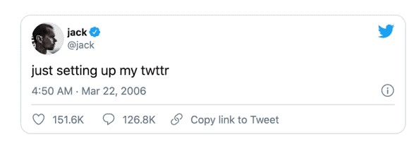
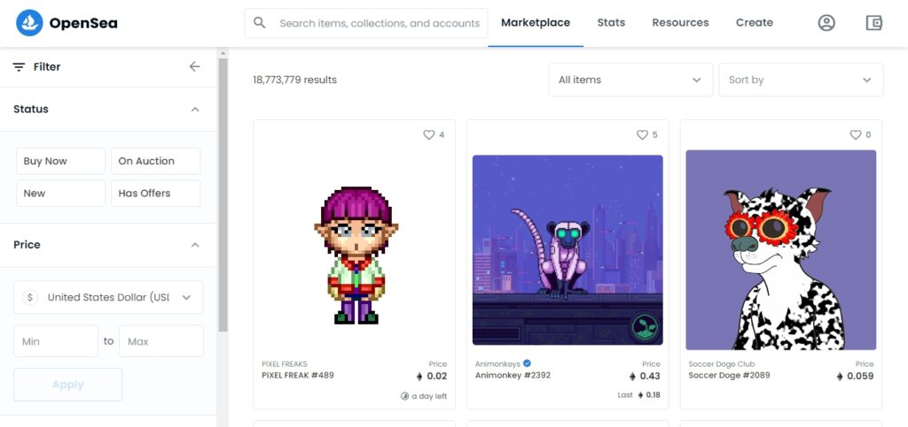
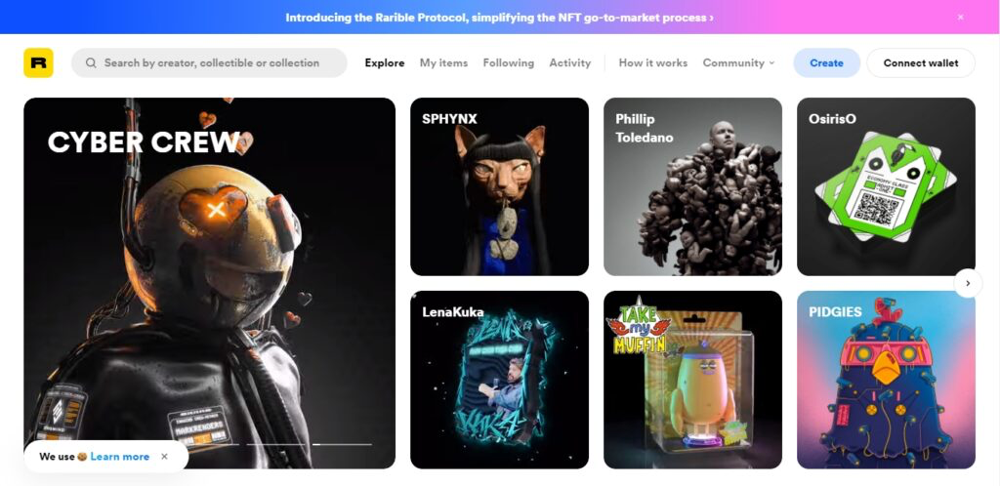

Halo, Neoreaders! Tahukah kamu? Akhir-akhir ini banyak istilah-istilah baru yang menjadi trending di berbagai media sosial, salah satunya yaitu NFT. Nah, bagi kamu yang tertarik dengan dunia bisnis ekonomi modern, pasti pernah dengar istilah NFT. Lalu, apa itu NFT? Yuk, simak semua yang perlu kamu ketahui tentang NFT di bawah ini!
NFT atau Non-Fungible Token adalah token yang dapat kita gunakan untuk mewakili kepemilikan aset digital. Non-Fungible adalah istilah yang menggambarkan sesuatu yang memiliki sifat unik sehingga tidak dapat dipertukarkan dengan sesuatu yang lain. NFT digunakan untuk membeli dan menjual karya seni digital. Yang dibeli di sini adalah NFT-nya sebagai bukti kepemilikan karya seni tersebut.
Segala aset unik dapat diperjualbelikan di dunia NFT mulai dari karya seni digital, barang koleksi, dokumen, dan karya unik lainnya. Karya seni dalam bentuk fisik dapat diubah menjadi digital terlebih dahulu, kemudian dijual dalam bentuk digital.
Tweet Pertama CEO Twitter Jack Dorsey terjual $2.9 Miliar.
Dengan berbasis teknologi blockchain Ethereum, NFT dapat diperjualbelikan secara online tanpa perantara, seringkali menggunakan cryptocurrency (mata uang kripto). Di dunia NFT, data mengenai pemilik NFT akan disimpan dan diamankan dalam “buku besar bersama” yang biasa disebut sebagai blockchain. Aset-aset digital nantinya akan disegel menjadi kode unik yang tidak dapat digandakan kepemilikannya. Kode unik tersebut yang akan melacak penerbit token, pemilik awal, dan pemilik akhir untuk sebuah karya atau aset.
Kepemilikan NFT dikelola melalui kode unik yang memudahkan verifikasi dan transfer token antar pemilik. Pemilik atau seniman juga dapat menyimpan informasi tertentu di dalamnya. Misalnya, seorang seniman dapat menyertakan tanda tangan di metadata (deskripsi suatu data) NFT. Selain itu, seniman dapat mengklaim royalti dari karyanya sehingga mereka akan menerima persentase penjualan setiap kali karya mereka dijual ke pemilik baru. Dengan cara ini, seniman dapat menjual banyak salinan karyanya.
Nah, jika kamu ingin memulai koleksi NFT, kamu harus menyiapkan beberapa hal terlebih dahulu. Pertama, kamu harus mempunyai dompet digital yang akan digunakan untuk menyimpan NFT dan mata uang kripto. Oleh karena itu, kamu juga perlu membeli beberapa uang kripto, tergantung pada mata uang yang diterima oleh penyedia NFT-nya.
Setelah dompet digital sudah siap digunakan, kamu dapat mengunjungi situs-situs atau marketplace NFT untuk berbelanja atau mengunggah hasil karya sendiri. Saat ini, pasar NFT terbesar adalah OpenSea, Rarible, Foundation dan Binance.
OpenSea merupakan pasar terbesar untuk barang digital. Mulai dari barang koleksi, item game, seni digital, dan aset digital lainnya yang didukung oleh blockchain seperti Ethereum.
Mirip dengan OpenSea, Rarible adalah pasar yang bertujuan sebagai wadah para seniman dan kolektor untuk melakukan jual beli NFT. Rarible memberikan token RARI kepada pengguna aktif yang membeli atau menjual di pasar NFT.
Nah, meskipun platform-platform tersebut menampung ribuan creator dan kolektor NFT, beberapa seniman telah menjadi korban dari peniru yang menjual karya mereka tanpa izin. Jadi, pastikan kamu melakukan riset dengan cermat sebelum membeli, ya!
Hanya karena kamu dapat membeli NFT, apakah itu berarti kamu harus? Itu tergantung.
“NFT berisiko karena masa depan mereka tidak pasti, dan kami belum memiliki banyak sejarah untuk menilai kinerja mereka,” kata Arry Yu, ketua pendiri Dewan Blockchain Cascadia. “Karena NFT sangat baru, mungkin ada baiknya menginvestasikan sejumlah kecil untuk mencobanya sekarang,” tambah Arry Yu.
Dengan kata lain, berinvestasi di NFT merupakan sebuah keputusan pribadi. Jika kamu memiliki uang cadangan, mungkin layak dipertimbangkan. Namun perlu diingat, bahwa nilai NFT sepenuhnya didasarkan pada apa yang orang lain bersedia bayar untuk itu. Akibatnya, permintaan pembeli akan memiliki dampak yang signifikan terhadap harga pasar.
Oleh karena itu, jika kamu ingin investasi dengan NFT penting untuk melakukan riset terlebih dahulu. Pahami risikonya bahwa kamu mungkin kehilangan semua investasi. Namun, jika kamu memutuskan untuk mengambil risiko, lakukanlah dengan sangat hati-hati.
Nah, itu dia semua tentang NFT. Bagaimana, Neoreaders? Apakah kamu tertarik untuk membeli NFT? Menghabiskan banyak uang untuk membeli sertifikat suatu barang digital, terdengar cukup gila bukan? Jadi buat kamu yang tertarik jangan lupa pantau terus perkembangan informasinya ya!